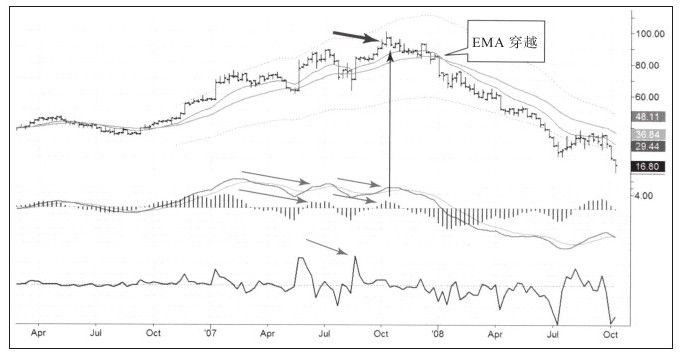

2007年10月我从亚洲飞回纽约的时候，旁边座位上的那个人是一名基本面对冲基金分析师。他告诉我他主要研究博彩业股票，我就问他哪家博彩公司的基本面最好，他说是MGM，并且他的理由让我没有任何疑问。
我们都是从澳门返回，MGM刚刚新开了全球最大的赌场，名叫“威尼斯人”。他对我说在赌场一层巨大的大厅中有大约40%的空间用于赌博，二层是VIP层，顶层是VIP中的VIP层，只有那些有百万港币（大约13万美元）的客户才能进去。他非常看好这家公司，并说他的客户持有上百万股MGM股票。
我拿出手提电脑打开MGM走势图，如图9-5所示，图中最上面的箭头就是我们对话的那天。我告诉他MGM股价已经接近100美元了，尽管上涨趋势看起来不错，但我也不会在高于价值时（也就是两条移动平均线之上的位置）买入，我会等它回调到低于价值时再做多。

即便是最清醒的分析师也会被大量的表象所迷惑，当MGM股价开始下跌时，我真的以70美元买了一点，随后很快就止损出局。今天回头看这幅图，我很怀疑当时自己是不是闭着眼睛在看这幅图，当时图中有大量的顶背离，它们都在对我说“做空、做空！”当时MACD柱背离、MACD线背离（尤其强烈的看跌信号），同时2007年10月强力指标也发出了顶背离信号，这可是三连胜[1]啊！2009年2月，13周快速EMA下穿26周慢速EMA，这是熊市趋势开始的经典标志。所有的下跌都从这里开始。我得到的安慰是错过了这次做空机会而获得了教训，我把它写在我的第一本书的结束语中：和所有严谨的交易者一样，我要不断学习并保留明天比今天更聪明的权利。
后来我再也没有见过这位乘客。我当时只买了1 000股，所以损失不大，这都让我不开心，与他及他的客户比起来，我这点损失微不足道。他们持有上百万股股票，股价从近100美元跌到个位数，这绝对是个灾难。当你回想到止损的时候，你会发现你比那些亏了大钱而不能再进入股票市场的人要幸运得多，像2007~2008年这样的泡沫未来还将重复，但这种事情只会发生在新一代交易者进入市场的时候。
[1]三连胜式，赌马中连续三场猜中跑进第一的马匹号码，出现的概率极低。——译者注